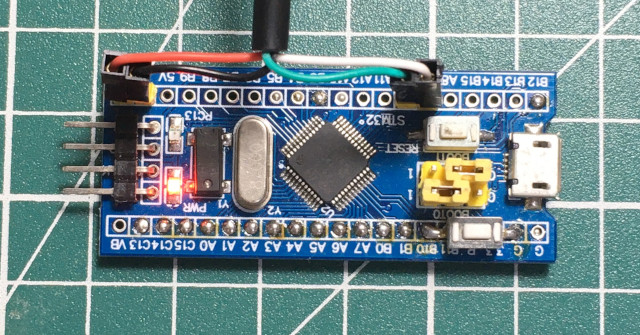
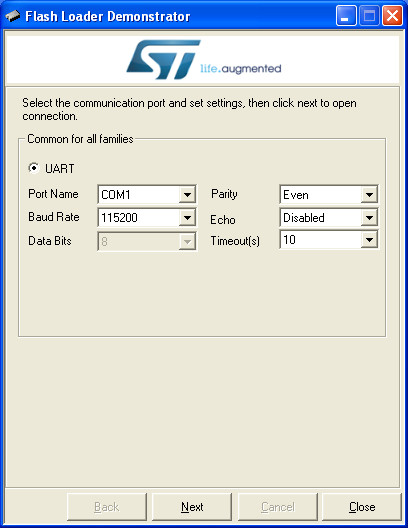
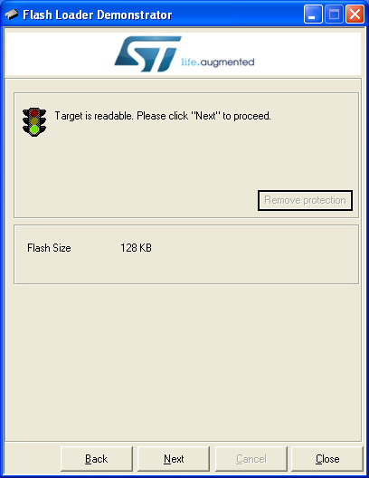
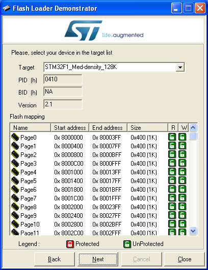
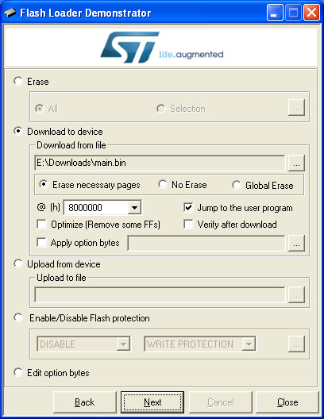
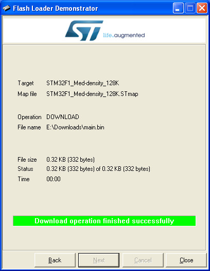
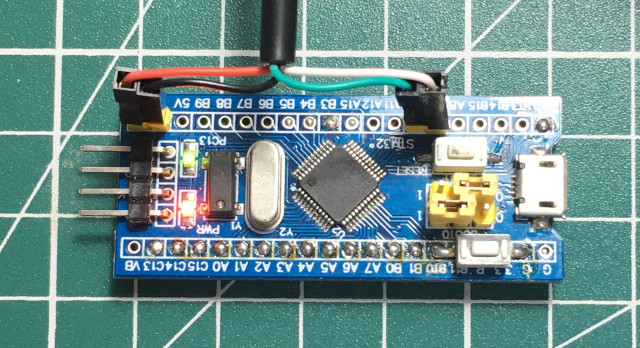

微處理器 - STMicroelectronics STM32F103 - 如何透過UART燒錄程式(Flash Loader)
1. 連接UART接腳，BOOT0接到1的位置

2. 按下RESET按鍵
3. 執行Flash Loader Demonstrator

Next

Next

Next(Jump to the user program記得勾選)

Close

完成
